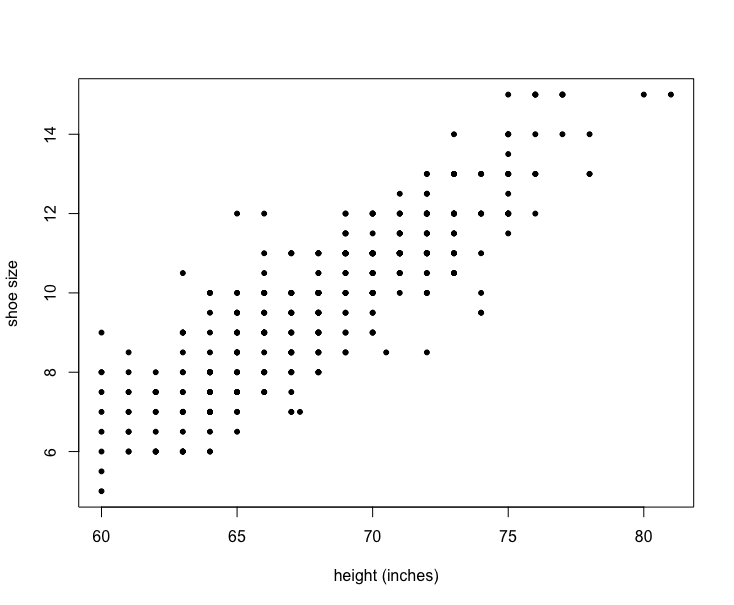
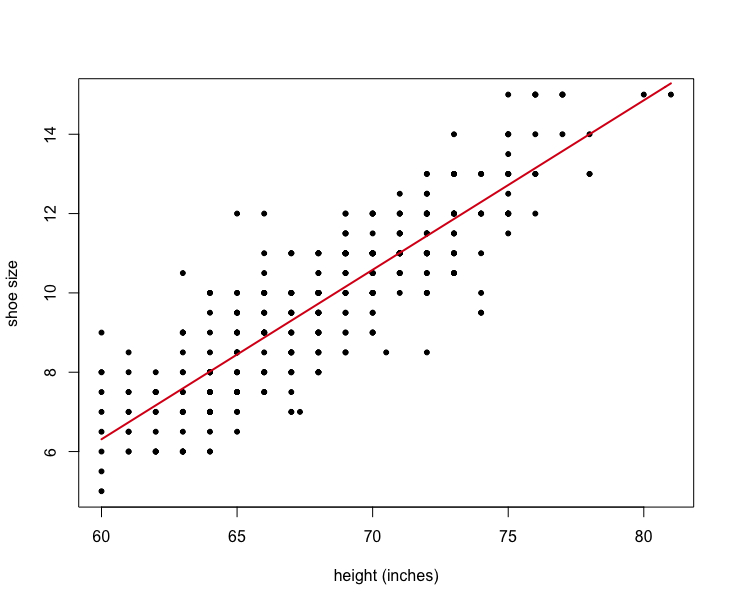

Mètodes d'Investigació Criminològica Avançada
Sessió 5: Anàlisi quantitatiu
Models Lineals
L'equació de predicció
$$\hat{y} = a + bx$$mínims quadrats ordinaris
$$b = \frac{\sum\left(x - \bar{x}\right)\left(y - \bar{y}\right)}{\sum\left(x-\bar{x}\right)^2}$$$$a = \bar{y} - b\bar{x}$$
Exercici: Biometria dels estudiants
R ScriptDataset
Relació entre altura i talla de sabates
Relació entre altura i talla de sabates
Correlació
$$r = \left(\frac{s_x}{s_y}\right)b$$Regressió multivariant
$$\hat{y} = \alpha + \beta_1x_1 + \beta_2x_2$$Regressió multivariant
3DVariables categòriques
$$\hat{y} = \alpha + \beta_1{x_1} + \beta_2{\textrm{D}}$$Variables categòriques

Variables categòriques